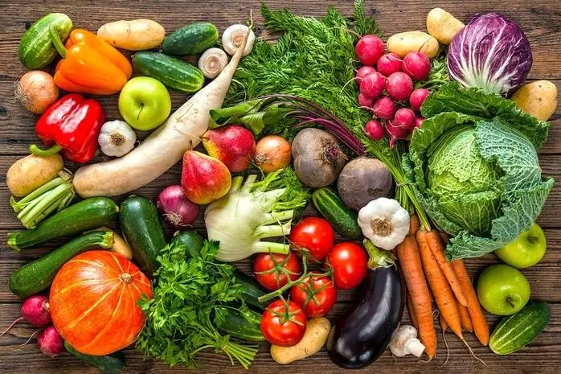

Овочі та фрукти:
Фундамент вашого здоров'я
Вони не просто їжа, а джерело життя. Вітаміни, мінерали та клітковина працюють разом, щоб захистити ваше серце, зміцнити імунітет та подарувати енергію.
Чому це так важливо?
Овочі та фрукти — це невід’ємна частина здорового раціону. Дослідження підтверджують, що регулярне споживання рослинної їжі суттєво впливає на тривалість та якість життя.
Здоров'я серця та судин
Достатнє споживання овочів допомагає знизити артеріальний тиск та зменшує ризик інфаркту й інсульту. Калій та магній, що містяться в них, підтримують роботу серцевого м'яза.
Контроль ваги
Завдяки низькій калорійності та великій кількості клітковини, овочі створюють відчуття ситості без зайвих калорій. Це ідеальний інструмент для підтримки здорової маси тіла.
Захист клітин
Антиоксиданти та фітонутрієнти захищають клітини організму від пошкоджень та запальних процесів, знижуючи ризик розвитку хронічних захворювань та деяких видів раку.
Основні поживні речовини
| Продукт | Ключові речовини | Вплив на здоров’я |
|---|---|---|
| Морква | β-каротин, клітковина | Підтримує зір та імунітет |
| Броколі | Вітаміни C, K, фолат, калій | Зміцнює кістки та серце, протиракова дія |
| Помідор | Лікопін, вітамін C | Потужний антиоксидант, захист шкіри |
| Яблуко | Пектин, калій, вітамін C | Корисне для мікрофлори та рівня холестерину |
| Шпинат | Залізо, магній, вітамін K | Кровотворення та здоров’я кісток |
| Чорниця | Антоціани, вітамін C | Покращує пам’ять та зір |
🎨 Магія кольору
Експерти радять "їсти різнокольорово". Кожен колір вказує на унікальні фітохімічні речовини: червоний (лікопін) для серця, помаранчевий (каротин) для зору, фіолетовий (антоціани) для мозку, а зелений — для очищення та захисту клітин.
Практичні поради

Правило тарілки
Уявіть свою тарілку розділеною навпіл. Половину повинні займати овочі та зелень, чверть — якісний білок (риба, м'ясо), а ще чверть — складні вуглеводи. Цей простий візуальний метод забезпечує баланс нутрієнтів без нудного підрахунку калорій.

На видному місці
Ми їмо те, що бачимо. Складайте фрукти у прозору вазу на столі або розміщуйте нарізані овочі на рівні очей у холодильнику. "Чаша з яблуками" на столі значно підвищує шанси на корисний перекус.

Овочі всюди
Додавайте овочі навіть туди, де їх зазвичай немає. Шпинат в омлет, терта морква в котлети, гриби в соус до пасти. Це робить страву об’ємнішою, ситнішою та менш калорійною.

Розумні покупки
Плануйте хоча б одну овочеву страву на день перед походом у магазин. Купуйте сезонні продукти — вони найсмачніші. І пам'ятайте: заморожені овочі взимку часто корисніші за "свіжі" з теплиць.